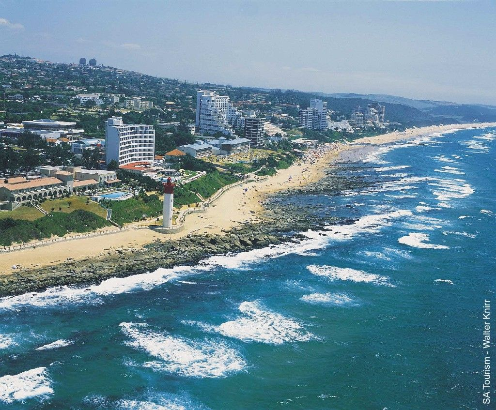
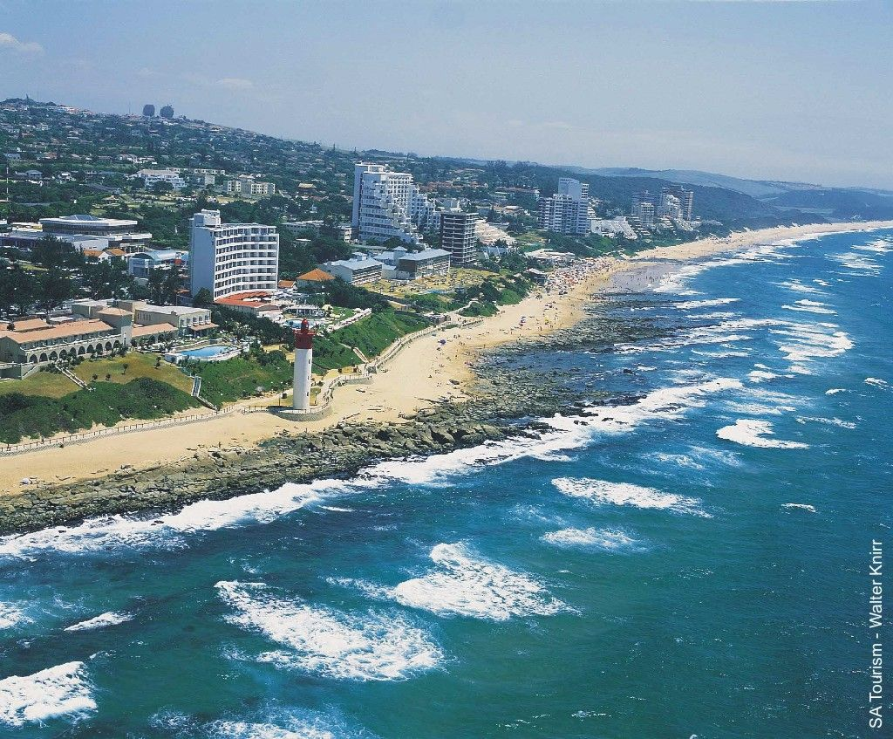
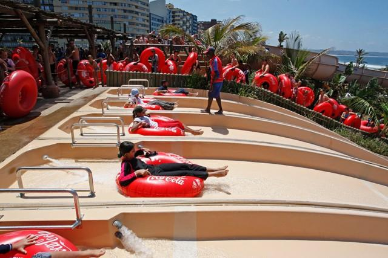

Durban, a coastal city in eastern South Africa’s KwaZulu-Natal province, is known for its African, Indian and colonial influences. Refurbished for soccer’s 2010 World Cup, the seafront promenade runs from uShaka Marine World, a huge theme park with an aquarium, to the futuristic Moses Mabhida Stadium.Durban is the third most populous city in South Africa after Johannesburg and Cape Town and the largest city in the South African province of KwaZulu-Natal. Durban forms part of the eThekwini Metropolitan Municipality, which includes neighboring towns and has a population of about 3.44 million,making the combined municipality one of the biggest cities on the Indian Ocean coast of the African continent.

Go swimming or relax at the beach,I heard in Durban its summer all year.
 

Gteway is a beautiful mall ,you could take your loved ones shopping.

Like I said,its summer all year,enjoy some water parks.
Lets go watch a live game of soccer at Moses Mabhida stadium.

 Home
Home